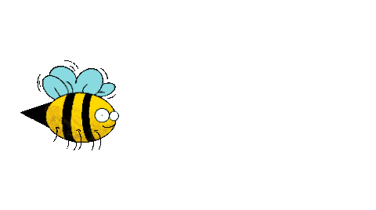

What We Can Do For Bees
- Limit Pesticides and Herbicides

They contain chemicals that can harm the bees! - Buy Local Produce
- Plant Flowers that attract bees
 - Don't kill or disturb them! Leave them be.
They contain chemicals that can harm the bees!